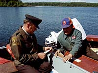

Present Day Commercial Fishery in Saskatchewan
Let's say you'd like to become a commercial fisherman. You most likely have several questions that require some answers before you embark on your new career....
|

How does commercial fishing rank in Saskatchewan?  Fishing is a renewable resource and with any renewable resource, is based on the principal that natural populations produce an annual surplus which can be harvested on a sustainable basis. Fisheries biology research has been able to estimate the amount of each type of fish species available for harvest. This 'allowable catch' is then partitioned among the various users, according to certain priorities.
|
- 1. Conservation: Ensure that sufficient breeding fish are available to maintain the population. If the fishery is badly depleted, no fishing is allowed.
- 2.Treaty Indian Fishing: If surplus is available, the first users considered must be Indians taking fish for food pursuant to treaty rights.
- 3. Subsistence Fishing: Mainly northern areas, disadvantaged local residents who need fish for food are given access to the resource.
- 4. Sportfishing by Saskatchewan Residents: All Saskatchewan residents with valid sportfishing licenses have access to all public waters for angling purposes, subject to seasons and catch limits.
- 5. Commercial users: This includes sport and commercial fishing, and tourist outfitting. Preference in allocating the resource to these users is based mainly on past fishing history on the lake in question.